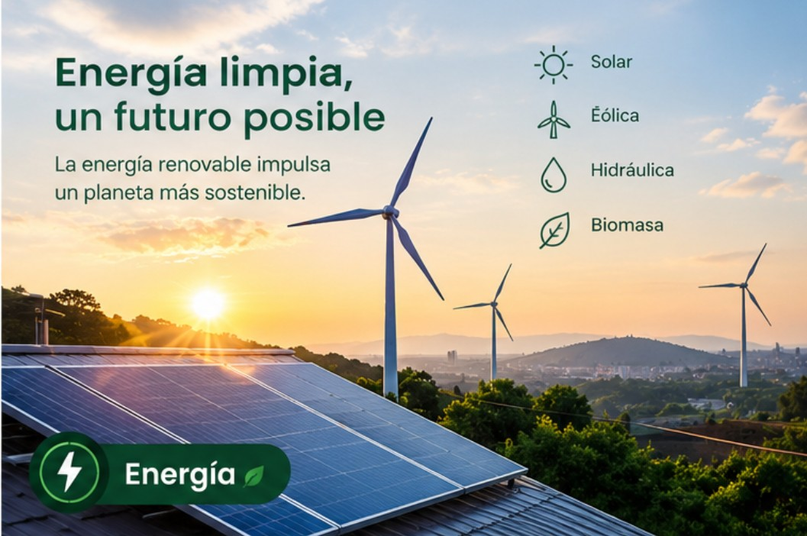

Ecotecnología
Optimización del consumo energético residencial
Optimización del consumo energético residencial
Analizamos los factores relacionados con el consumo energético residencial y las posibilidades de mejorar su gestión mediante tecnologías automatizadas.

El problema de investigación se relaciona con el consumo innecesario de energía producido por el uso prolongado de determinados dispositivos eléctricos.
La falta de información detallada sobre el funcionamiento y los patrones de consumo puede dificultar la identificación de situaciones en las que se utiliza electricidad de manera innecesaria.
El uso prolongado de determinados dispositivos puede generar consumo innecesario de electricidad.
Analizar los patrones de utilización permite reconocer comportamientos relacionados con la demanda de energía.
La ausencia de información detallada puede dificultar la identificación de situaciones de consumo innecesario.
Se necesitan alternativas que permitan analizar y mejorar la gestión del consumo residencial.
De acuerdo con la Unidad de Planeación Minero Energética (UPME), durante 2023 la región Andina presentó el mayor consumo de energía eléctrica del sector residencial del país, con 13.865 GWh.
Este dato permite reconocer la importancia de analizar el comportamiento del consumo energético residencial y considerar alternativas tecnológicas que contribuyan a su uso eficiente.
Esta pregunta orienta el análisis de las tecnologías estudiadas y permite identificar sus posibilidades, características y oportunidades de mejora.